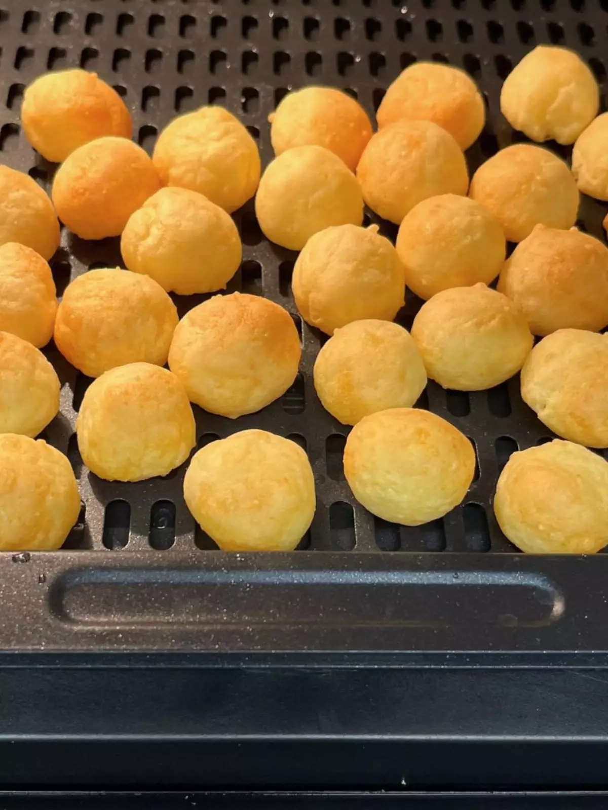

Bolinhas de Batata na AirFryer

Receita fit fácil, rápido e muito gostosa de se fazer. Bolinhas de batata na AirFryer são sequinhas,
crocante por fora, macia por dentro e cheia de sabor e que você pode até rechear.
Ingredientes
- 200g de batata inglesa
- 2 colheres de sopa de azeite
- 1/2 xícara de amido de milho (ou até parar de grudar na mão)
- Sal e temperos a gosto
- Recheios a gosto
Modo de preparo
- Cozinhe as batatas, até ficarem a ponto de amassa-las.
- Em um recipiente, amasse as batatas e abra formando um tapete.
- Coloque o azeite, o sal e os temperos e adicione aos poucos o amido de milho.
- Misture tudo muito bem até dar liga e parar de grudar na mão.
- Faça pequenas bolinhas com a massa da batata. Recheios são opcionais, dependendo do recheio misture com a massa ou abra as bolinhas, coloque o recheio e feche-as novamente.
- Pincele as bolinhas com azeite e leve a AirFryer a 200°C por 15 minutos ou até dourar.
- Sirva-se!
Página Inicial